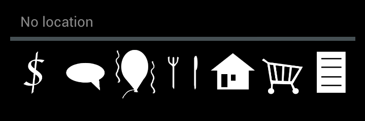

Plingnote is an Android application in which you can write notes and, if desired, assign them to a specific location on a map. Apart from adding title and content, it’s also possible to set an alarm to be triggered when the user is approaching the location assigned to a note.
Copyright © 2012 Plingnote
Plingnote offers three different ways of viewing saved notes - in a list, in a grid or on a map - where each view has its own benefits. In all views, new notes can be added by pressing the “+”-button in the upper right corner. To navigate between the views, you can press the tabs at the top of the screen. Another way of navigating between the views is to swipe from the sides.
1.1 Map 1.2 List 1.3 Grid
In the map view, it’s possible to view saved notes on a map. To zoom, simply move your thumb and finger in a pinch gesture. Use your fingers to drag the map to the desired position. Hold a finger anywhere on the map to add a new note.
The list view offers an ordinary list of notes, ordered by creation date. To edit or read a saved note, click in the desired column. A great feature of the list view is the ability to delete multiple items. To do so, hold your finger on any note until a menu is shown at the top of the screen. You delete the selected items by clicking the trash bin icon to the upper right. There are several ways of dismissing the menu; deselect all the notes, change view or click the done button to close it manually. You can also search for a specific note by clicking the magnifier.
In the grid view, the notes are shown as thumbnails. Depending on what category the note belongs to, an image will tell what category it belongs to. Notes can be deleted in the same way as in the list view.
In this view, you can read or edit a note. Simply tap on field you want to change. The title of the note is entered in the top field, while the actual content of the note is entered below.
2 Edit note
The bottom of the screen consists of a bar where you can add additional content to the view (see previous picture), such as picture, category, reminder and location.
2.1.1 Reminder
Let’s you set a reminder to the note. An alarm is triggered when you’re approaching the location of the note.
2.1.2 Image
Let’s you pick a picture from your device’s gallery and assign it to the note.

2.1.3 Category
Add a category to your note to make it easier to find it. There are several categories to choose from:
To launch the settings view, click the icon with three dots in the upper right corner. It consists of two sections, Search and About.
3 Settings
Let’s you clear the search history so that no recent entries are displayed when typing into the search field.
General information about the application.
Tell us what you think about our application! Clicking inside the column will take you to a mail client.
What are you allowed to do with our application? Know your rights!
Modules used by Plingnote.